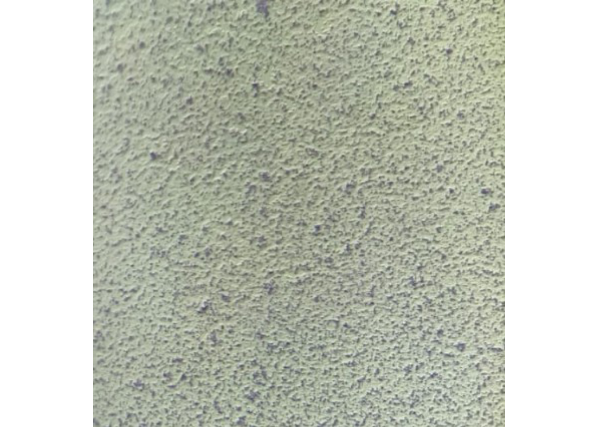
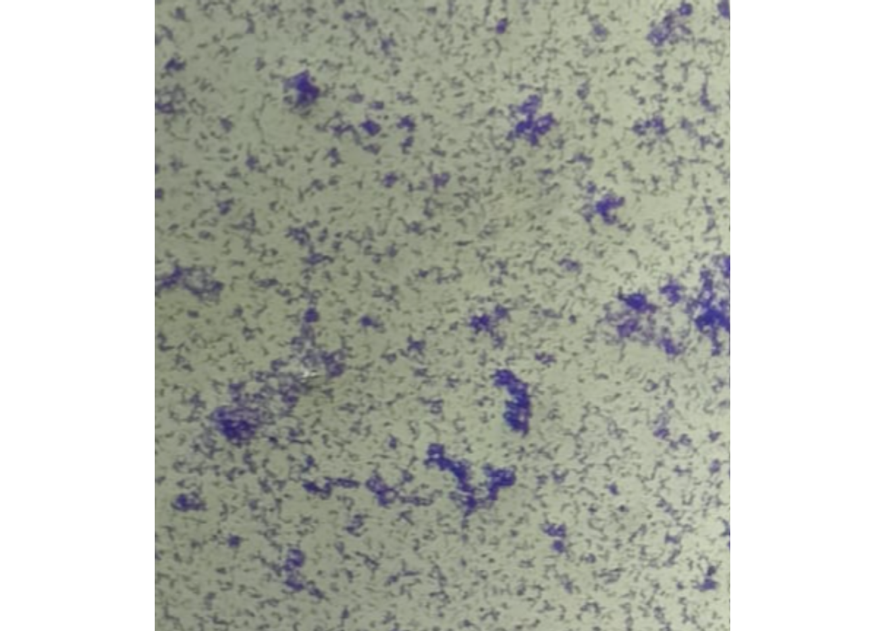

5 C.elegans plate experiment
In dit experiment zijn C.elegans nematoden blootgesteld aan verschillende concentraties van verschillende stoffen. Hierbij werd gekeken naar het aantal nakomelingen na incubatie met de desbetreffende stof. Het doel van het experiment is om te kijken wat het effect van de stof op het aantal nakomelingen van de C.elegans zijn. De verkregen data uit het experiment wordt hier verder verwerkt.
Data is verkregen van J. Louter (INT/ILC)
De eerste stap is om het Excel bestand in te lezen in R
Celegans_dataset <- read_excel(here::here("data-raw", "Data010", "CE.LIQ.FLOW.062_Tidydata.xlsx"), sheet = 1)Na het inlezen van de data worden de kolommen van de data gecontroleerd en wordt er gekeken naar wat voor soort data het is. In dit geval staat de ruwe data als double maar moet het een integer zijn aangezien er naar nakomelingen wordt gekeken en dus hele getallen zijn. Ook moet de compConcentration van character veranderd worden naar numeric aangezien het een waarde is. Als laatst moeten de compName veranderd worden naar een factor aangezien het categorical data is.
#RawData veranderen van dbl naar int
Celegans_dataset$RawData <- as.integer(Celegans_dataset$RawData)
#compName veranderen van character naar factor
Celegans_dataset$compName <- as.factor(Celegans_dataset$compName)
#compConcentration veranderen van character naar numeric
Celegans_dataset$compConcentration <- as.numeric(Celegans_dataset$compConcentration)Na het veranderen van de data word een plot gemaakt
#Om ervoor te zorgen dat de dataset niet door 0 heen gaat voor de output van de grafiek
Celegans_dataset$compConcentration_offset <- Celegans_dataset$compConcentration + 0.001
#Plot met de aangepaste C.elegans data met het gebruik van geom jitter
Celegans_plot <- ggplot(data = Celegans_dataset, aes(x = compConcentration_offset, y = RawData)) +
geom_jitter(aes(color = compName, shape = expType), size = 3, alpha = 0.8, width = 0.1, height = 0) +
scale_x_continuous(trans = "log10", breaks = c(0.001, 0.01, 0.1, 1, 10)) +
labs(title = "Aantal nakomelingen C.elegans na incubatie",
subtitle = "Het aantal nakomelingen van de C.elegans na de incubatie met verschillende concentraties van verschillende stoffen ",
y = "Aantal nakomelingen ",
x = "Concentratie (nM) ") +
theme_classic()
Celegans_plot  Uit de bovenstaande grafiek is te zien dat de positieve controle voor het experiment Ethanol is en de negatieve controle S-medium.
Data analyze: Eerste stap is om te kijken of de data normaal verdeeld is doormiddel van een Spahiro-Wilk test. Als de data normaaal verdeeld is wordt er een ANOVA test gedaan om de cpncentraties met elkaar te vergelijken.
Als laatste stap wordt de data genormaliseerd. Hierdoor kan er makkelijker vergeleken worden met de negatieve controle of er een significant verschil is.
#Berekenen van het gemiddelde van de negatieve controle
Celegans_negative <- Celegans_dataset %>%
filter(expType == "controlNegative")
mean_control_negative <- mean(Celegans_negative$RawData)
#Gemiddelde van de negatieve controle is 85.9
Celegans_dataset_norm <- Celegans_dataset
#Zorg ervoor dat de data 1 is door alle waarden door het gemiddelde te delen
Celegans_dataset_norm$RawData <- (Celegans_dataset_norm$RawData / mean_control_negative)Van de genormaliseerde data wordt een grafiek gemaakt
Celegans_dataset_norm$compConcentration_offset <- Celegans_dataset_norm$compConcentration + 0.001
Celegans_plot_normalized <- ggplot(data = Celegans_dataset_norm, aes(x = compConcentration_offset, y = RawData)) +
geom_jitter(aes(color = compName, shape = expType), size = 3, alpha = 0.8, width = 0.1, height = 0) +
scale_x_continuous(trans = "log10", breaks = c(0.001, 0.01, 0.1, 1, 10)) +
labs(title = "Fractie aantal nakomelingen C.elegans na incubatie",
subtitle = "Het aantal nakomelingen van de C.elegans na de incubatie met verschillende concentraties van verschillende stoffen ",
y = "Fractie aantal nakomelingen ",
x = "Concentratie (nM) ") +
theme_classic()
Celegans_plot_normalized